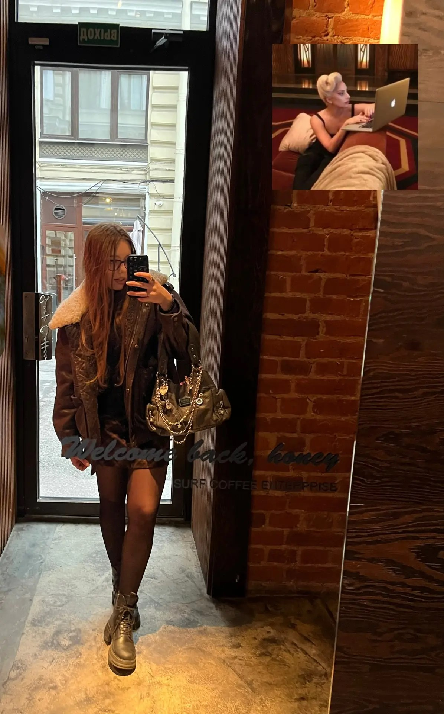
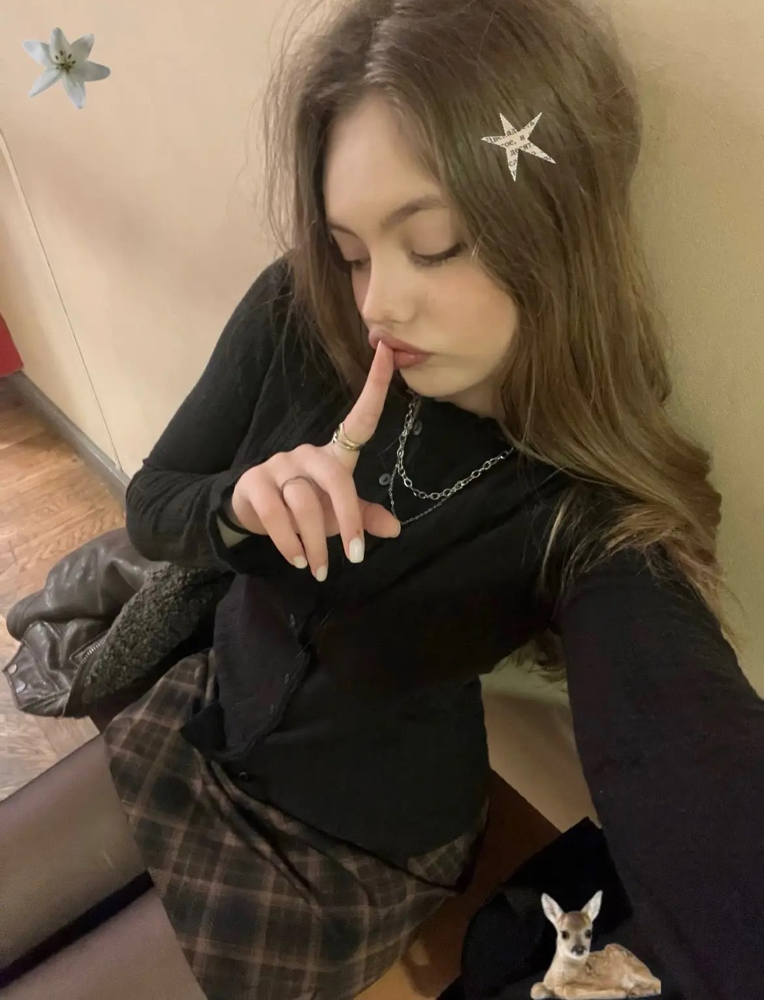
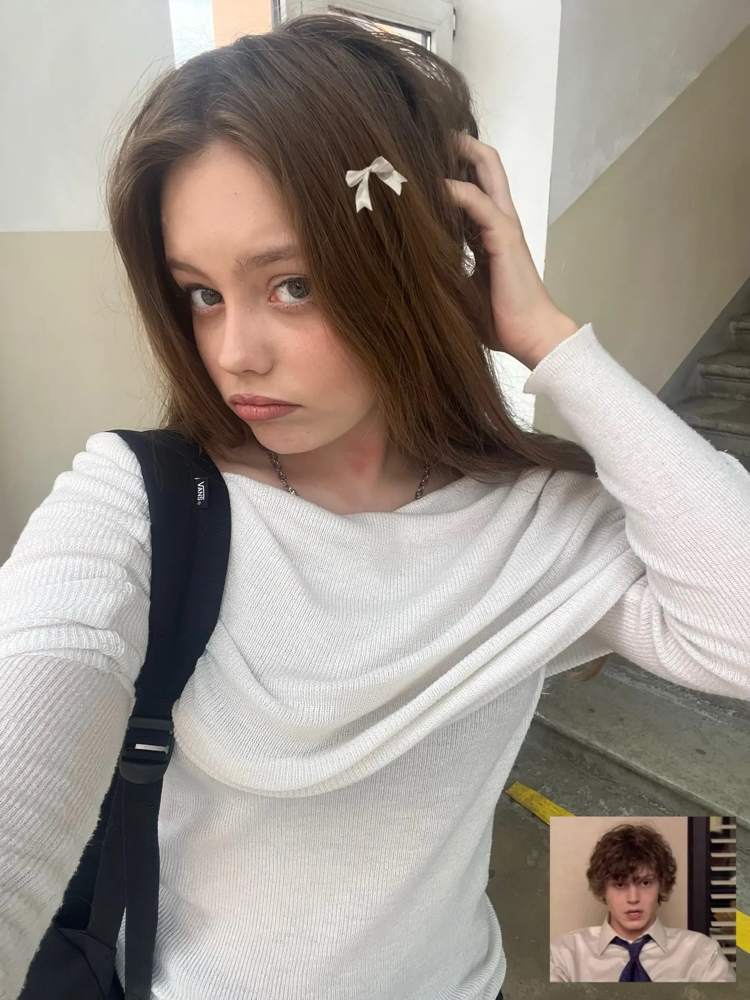
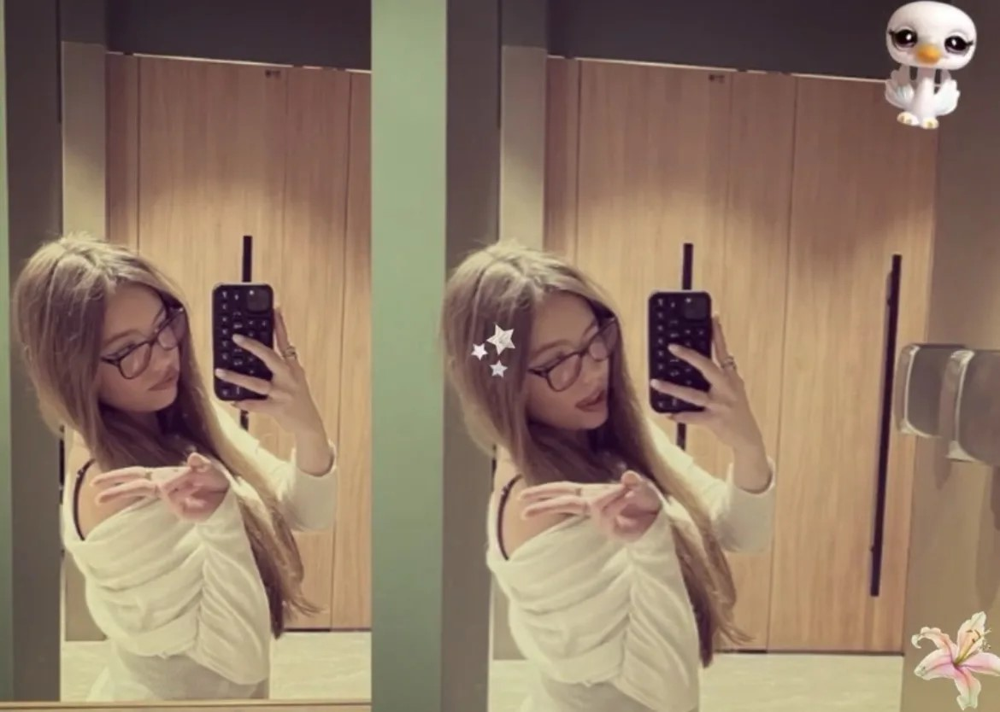
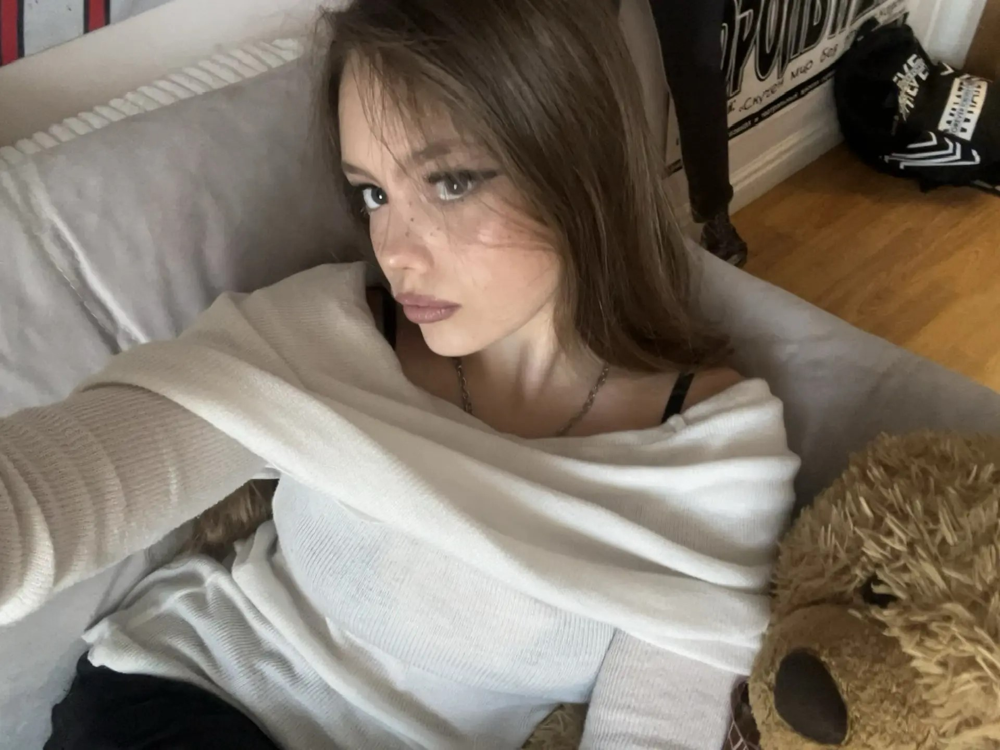
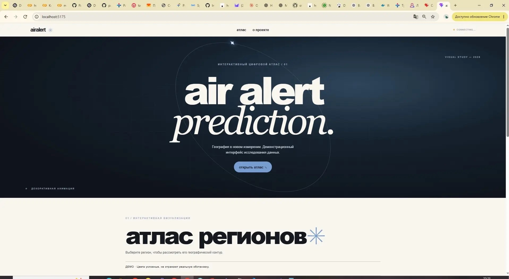
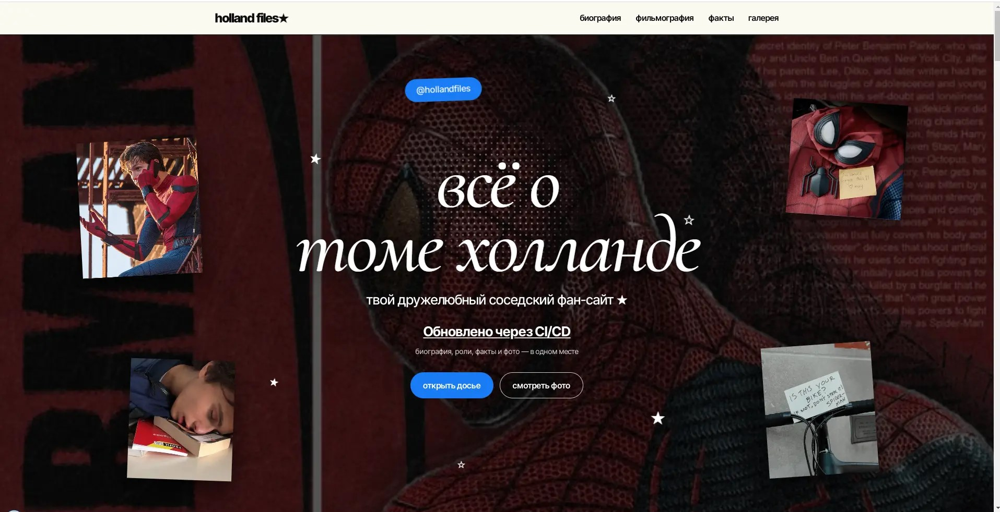

AI & DATA SCIENCE STUDENT
a little bit about me.
учусь управлять машинами до того, как они начнут управлять нами. <3
познакомиться ↘︎01 / INTRODUCTION
обо мне✳
Меня зовут Блюм Таисия Артемовна. Я студентка первого курса ГУАП, группа 4614.
Направление подготовки — 09.03.03 «Прикладная информатика». Образовательная программа — «Прикладной искусственный интеллект и наука о данных».
Я воспринимаю свою образовательную программу как сочетание математики, программирования и анализа данных, позволяющее создавать интеллектуальные системы и решать реальные задачи. Особенно меня интересуют большие языковые модели (LLM), принципы их обучения и возможности их применения.
Я выбрала это направление, потому что искусственный интеллект стремительно меняет подход к программированию. Нейросети уже способны автоматизировать многие задачи разработчиков, поэтому мне интересно не только пользоваться ими, но и понимать принципы их работы, обучать модели и создавать собственные решения.
В будущем я хочу стать ML Engineer, а заодно внести свой небольшой вклад в восстание машин. <3
В ближайшие годы я хочу углубить знания математики, Python и машинного обучения, научиться обучать, дообучать и оптимизировать языковые модели, а также внедрять их в реальные программные продукты.
Мне нравится сочетать аналитическое мышление с творческим подходом, заниматься преподаванием и создавать цифровые проекты.



FIG. 01 — a few fragments of my life.
02 / EXPERIENCE & PROJECTS
что я делаю✳

01 / TEAM PROJECT
AirAlertPrediction
Командный университетский проект в области машинного обучения. Работаю с подготовкой данных, формированием признаков и разработкой программных компонентов проекта.
02 / PERSONAL PROJECT
Holland Files
Авторский адаптивный фан-сайт, посвящённый Тому Холланду. Самостоятельная разработка дизайна, структуры и интерактивных элементов. Автоматическое развёртывание через GitHub Actions.

Mental Health Website
Индивидуальный школьный проект: создание сайта, посвящённого борьбе с тревожностью, с помощью v0.dev и Vercel.
Tutoring
Репетиторство по английскому языку и математике, разработка индивидуальных учебных материалов.
мой путь.
Первый индивидуальный веб-проект
Подготовка к ЕГЭ по информатике, основы Python и репетиторство
Участие в региональном этапе Всероссийской олимпиады школьников по английскому языку.
Поступление в ГУАП
Изучение GitHub, Docker, MySQL и машинного обучения
ML Engineer & machine uprising enthusiast
what's next?
Одним из своих достижений в IT считаю участие в командном проекте по машинному обучению уже на первом курсе университета.
Сейчас я развиваю навыки программирования на Python, обработки данных и веб-разработки. В дальнейшем хочу изучать архитектуру трансформеров, обработку естественного языка (NLP) и большие языковые модели (LLM).
Планирую участвовать в хакатонах, профильных образовательных мероприятиях и соревнованиях по машинному обучению.
currently learning...
03 / GET IN TOUCH
let's talk✳
Есть вопросы или идеи для совместного проекта?